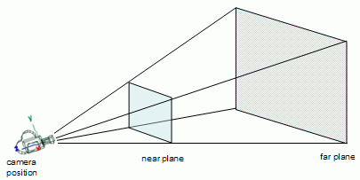
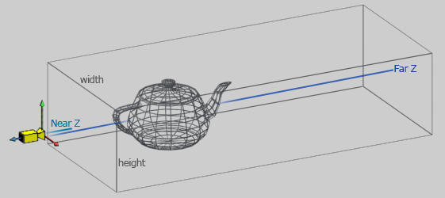
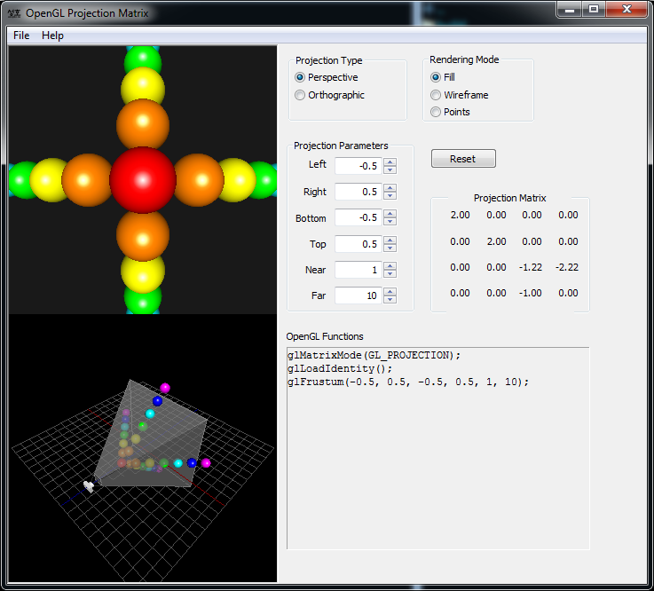

В этом уроке:
- используем perspective-режим
- описываем frustum
- используем ortho-режим
Переходим в 3D. И для начала разберемся, как нам реализовать перспективу. Т.е. чтобы по мере удаления от нас предметы становились меньше, а по мере приближения – больше.
Скачивайте исходники и открывайте модуль lesson172_perspective.
Смотрим код, класс OpenGLRenderer. В методе prepareData заданы две вершины.
float x1 = -0.5f, y1 = -0.8f, x2 = 0.5f, y2 = -0.8f;
float[] vertices = {
x1, y1, 0.0f, 1.0f,
x2, y2, 0.0f, 1.0f,
};
Обратите внимание, что для каждой вершины используем 4 значения – x,y,z и w. Если с x,y,z все понятно, это просто координаты трех осей, то 4-е значение (w) нам пока неизвестно, раньше мы его не использовали. Если его явно не задавать в данных о вершине, то по умолчанию в шейдер придет значение 1. Мы пока тоже сделаем его равным одному.
В методе onDrawFrame указано, что из этих вершин нам надо нарисовать две точки
glDrawArrays(GL_POINTS, 0, 2);
Запустим приложение
![]()
На экране две зеленые точки
Теперь выясним зачем нужно это 4-е значение вершины - w. Оно используется системой для создания перспективы. Когда системе приходит на вход вершина (x,y,z,w), система делит координаты x,y,z на w и в итоге получает вершину с координатами (x/w, y/w, z/w), и это деление дает эффект перспективы. Давайте убедимся в этом. Перепишем массив в prepareData:
float[] vertices = {
x1, y1, 0.0f, 1.0f,
x1, y1, 0.0f, 1.5f,
x1, y1, 0.0f, 2.0f,
x1, y1, 0.0f, 2.5f,
x1, y1, 0.0f, 3.0f,
x1, y1, 0.0f, 3.5f,
x2, y2, 0.0f, 1.0f,
x2, y2, 0.0f, 1.5f,
x2, y2, 0.0f, 2.0f,
x2, y2, 0.0f, 2.5f,
x2, y2, 0.0f, 3.0f,
x2, y2, 0.0f, 3.5f,
};
Мы продолжаем использовать всего две точки (x1, y1, 0) и (x2, y2, 0), но теперь каждую из них мы выводим 6 раз, меняя значение w от 1 до 3.5.
Логично предположить, что если 6 раз нарисовать одну и ту же точку, то на экране в итоге будет одна точка. Но мы используем различные w для каждой из 6-ти точек. Т.е. при рисовании каждой точки, ее координаты будут поделены на w, а значит будут отличаться от остальных. Например, для точки (x1,y1,0) мы получим набор точек:(x1 / 1, y1 / 1, 0 / 1)
(x1 / 1.5, y1 / 1.5, 0 / 1.5)
(x1 / 2, y1 / 2, 0 / 2)
и т.д.
Т.е. это будут уже абсолютно разные точки и, соответственно, нарисованы они будут в разных местах, а не в одном.
В методе onDraw не забываем указать методу glDrawArrays, что нам теперь надо нарисовать не 2, а 12 вершин.
glDrawArrays(GL_POINTS, 0, 12);
Запускаем
![]()
Каждая из двух точек теперь превратилась в 6 точек. И обратите внимание как они расположены друг относительно друга. Создается иллюзия перспективы, т.е. точки как будто удаляются от нас. На размер точки пока не обращайте внимания, он не меняется. Смотрите именно на расположение. Чем больше значение w, тем «дальше» от нас находится точка в итоговом изображении.
Когда я сам изучал эту тему, у меня случился некий «разрыв шаблона». Я как-то рассчитывал, что я просто буду задавать z-координату и, тем самым, буду указывать системе насколько удалена или приближена будет ко мне точка. А тут какая то w.
Давайте попробуем забыть про w и использовать z.
Перепишем массив в prepareData:
float[] vertices = {
x1, y1, -1.0f,
x1, y1, -1.5f,
x1, y1, -2.0f,
x1, y1, -2.5f,
x1, y1, -3.0f,
x1, y1, -3.5f,
x2, y2, -1.0f,
x2, y2, -1.5f,
x2, y2, -2.0f,
x2, y2, -2.5f,
x2, y2, -3.0f,
x2, y2, -3.5f,
};
И замените значение константы POSITION_COUNT с 4 на 3.
private final static int POSITION_COUNT = 3;
Эта константа используется в методе glVertexAttribPointer и обозначает кол-во компонентов, которые мы используем чтобы передать данные о расположении вершины. В предыдущем примере мы использовали 4 компонента (XYZW), а теперь будем только 3 (XYZ).
Мы убрали из вершины данные о w (при передаче данных в шейдер оно автоматически будет равно 1). Теперь мы используем разные z-координаты. Т.е. интуитивно кажется, что должен получится примерно такой же результат, т.е. точки должны выстроится по линии перспективы, все дальше и дальше, т.к. они отдаляются от нас за счет z-координаты.
Запускаем
![]()
Видим всего две точки. Фокус не удался. И вот тут надо будет понять одну очень важную вещь. Наш экран – это двумерное изображение. Т.е. у него всего две оси – X и Y. Соответственно, только эти координаты он учитывает при расположении на экране всех объектов. И если мы хотим создать иллюзию удаления объекта, т.е. уменьшения его в размерах и некоторого смещения по линии перспективы, то нам необходимо менять именно X и Y значения.
Тут можно привести аналогию с листом бумаги. Вы взяли лист и нарисовали на нем, например, домик. А затем вас попросили нарисовать точно такой же домик, но чтобы он стоял чуть подальше «вглубь» листа. Вы просто возьмете и нарисуете тот же самый домик, но немного меньшего размера, потому что он расположен чуть «дальше» от вас и ваш мозг знает, что удаленность объекта можно эмулировать, просто сделав его меньшего размера. Но при этом вы же не использовали никаких z-координат. Вы нарисовали все на двумерном листе и использовали для этого только оси X и Y.
С OpenGL ситуация аналогична. Система ожидает от вас x и y координаты, чтобы нарисовать их на двумерном экране. И любую перспективу объекта она сможет изобразить, только используя x и y координаты. Мы видели на примерах точек, как значение w может нам помочь. Оно меняет x и y, и дает нам перспективу в итоговом изображении.
Но тогда возникает резонный вопрос - а зачем вообще нужна координата z? Есть и для нее работа. В нашем двумерном изображении она используется буфером глубины (который еще называется z-буфером). В качестве примера можно рассмотреть случай, когда у вас уже на этапе рисования системой изображения есть две совпадающие по (x,y) точки. Например: (1,2,0) и (1,2,-1). Т.е. они обе имеют координаты x=1 и y=2, а отличаются только по z. И допустим одна из этих точек красная, а другая синяя. Какую из них система должна нарисовать на экране?
По умолчанию будет видна та, которая была нарисована последней. Т.е. она просто будет нарисована поверх предыдущей. Но это вовсе не всегда правильно с точки зрения 3D-сцены. Мы ведь можем сначала отправить на отрисовку ближний к себе объект, а затем дальний. И в правильной 3D-сцене, если оба этих объекта находятся на одной линии нашего взгляда, ближний объект должен перекрывать собой дальний. Но по умолчанию будет виден дальний, потому что он был нарисован после ближнего и просто затер его. И вот тут выручает z-координата. Именно по ней буфер глубины определит, которая из точек находится «ближе» к вам, а которая дальше, и отобразит ближнюю. А дальняя, соответственно не будет нарисована.
Также тут стоит отметить, что z-координата ограничена длиной 1 в каждую сторону. Т.е. все точки, которые будут иметь z-координату больше 1 или меньше -1, просто не будут нарисованы. Т.е. аналогично, как и координаты x и y. Если помните, мы говорили об этом в уроке 169.

Т.е. все итоговые точки должны лежать в пределах от -1 до +1 по каждой из трех осей.
Когда я дочитал до этого момента, я немного приуныл, потому что все это выглядит как-то жутко неудобно, странно и непонятно. Особенно w-значение, которое надо каким-то образом самому рассчитывать, чтобы задать то или иное расстояние удаления объекта.
Но! Все оказалось совсем не так печально, как могло показаться. OpenGL любезно предоставляет механизмы, которые позволят нам ничего не знать про w-значение, а для указания расстояния до объекта использовать таки z-координату. Для этого нам просто необходимо будет создать матрицу и использовать ее.
Основной смысл в том, что существует две системы координат:
1) Первая - это 2D, которую мы только что рассмотрели. Где пара x и y задает расположение точки на экране, z используется буфером глубины, а w используется для корректировки xyz чтобы получилась перспектива. Именно в этой системе мы с вами работали до сих пор.
2) Вторая система координат - это виртуальное 3D пространство. Оно имеет три оси координат, и в нем координаты xyz используются для указания расположения объекта. Именно в этой системе мы будем создавать наше изображение. А система с помощью матрицы, будет конвертировать это все в первую систему, т.е. в обычные координаты 2D экрана.
Т.е. мы будем задавать вершину в 3D, используя три координаты (x,y,z) и передавать ее в шейдер. Также в шейдер мы будем передавать матрицу. А шейдер с помощью матрицы будет преобразовывать вершину и получать на выходе (x,y,z,w) значения, в которых уже будет рассчитана перспектива и именно эти значения будут использованы системой для рисования. Т.е. матрица за нас сама рассчитает, как из указанного нами z, получить w, чтобы объект был нарисован так, как будто он находится на указанном нами расстоянии (z). Тем самым матрица выполнит переход от виртуального трехмерного мира к двумерному экрану.
Итак, нам нужно создать эту волшебную матрицу, передать ее в шейдер и написать в шейдере использование этой матрицы. Перед тем, как создать матрицу, нам надо понять, что именно она будет делать. Смотрим на картинку.

Camera position – это точка, в которой находится камера. Т.е. с этой точки мы будем видеть изображение.
Near plane и Far plane – ближняя и дальняя границы видимости. Направление «взгляда» камеры проходит через центр этих границ. Также от камеры идут четыре луча, которые проходят через вершины этих границ и в итоге образуют пирамиду. Камера будет видеть все, что находится в этой пирамиде между near и far границами (эта область называется frustum).
Т.е. как в итоге будет получено изображение на экране?
1) Сначала мы рисуем свои объекты, которые хотим видеть. Для этого, мы как обычно задаем массив вершин и просим нарисовать нужные нам объекты. Т.е. все как мы делали ранее, в прошлых уроках. Единственное отличие – мы теперь будем использовать z-координату. Это даст нам возможность построить полноценное 3D изображение, т.е. "приближать" и "отдалять" объекты.
2) Мы формируем frustum-матрицу, т.е. матрицу, которая будет содержать в себе данные о пирамиде (которую мы только что обсудили). Для этого мы укажем расстояния от камеры до near и far границ, и размеры near-границы. Этого будет достаточно, чтобы полностью описать frustum-зону.
3) В шейдере мы применяем матрицу из п.2 к нашим вершинам из п.1. Тем самым будет выполнена проекция трехмерных объектов на двумерную поверхность. Т.е. будет выполнена та часть работы, про которую я рассказывал в начале урока, когда объем переходит в плоскость, и для создания перспективы используется w-значение, а z используется как z-буфер.
Т.е. идет преобразование виртуальных 3D координат в реальные 2D-координаты, чтобы вывести изображение на двумерный экран и сохранить видимость 3D.
И, как вы помните, мы говорили о том, что на двумерном экране у нас есть лимиты по каждой из осей. Т.е. точки, которые выходят за координаты -1 и 1 по любой из трех осей, не будут нарисованы. Frustum-матрица во время преобразования из 3D-сцены в 2D-экран рассчитывает все так, что объекты, которые находятся вне frustum-зоны, после преобразования в 2D будут находиться за координатами -1 и 1, и, соответственно, не будут нарисованы.
Давайте уже от теории перейдем к практике и создадим frustum-матрицу
Перепишем вершинный шейдер vertex_shader.glsl:
attribute vec4 a_Position;
uniform mat4 u_Matrix;
void main()
{
gl_Position = u_Matrix * a_Position;
gl_PointSize = 5.0;
}
Раньше мы просто передавали координаты вершины (a_Position) в систему (gl_Position). Теперь же мы преобразуем их с помощью матрицы, которая выполнит преобразования 3D-сцены в 2D-экран. Для этого мы добавляем в шейдер матрицу u_Matrix, как uniform-параметр. И будем умножать эту матрицу на a_Position.
В методе bindData мы добавляем код для получения доступа к матрице в шейдере
private void bindData(){
// координаты
…
// цвет
…
// матрица
uMatrixLocation = glGetUniformLocation(programId, "u_Matrix");
}
Ничего нового для нас. Используем метод glGetUniformLocation и указываем программу и имя переменной в шейдере. А переменная uMatrixLocation уже была объявлена мною в исходниках.
Осталось создать матрицу и передать ее в шейдер.
Создаем в этом же классе метод bindMatrix:
private void bindMatrix(int width, int height) {
float left = -1.0f;
float right = 1.0f;
float bottom = -1.0f;
float top = 1.0f;
float near = 1.0f;
float far = 8.0f;
Matrix.frustumM(mProjectionMatrix, 0, left, right, bottom, top, near, far);
glUniformMatrix4fv(uMatrixLocation, 1, false, mProjectionMatrix, 0);
}
Здесь мы указываем все параметры frustum области. near и far – это расстояния от камеры до near и far границ. Переменные left, right, bottom и top – это координаты сторон near-границы. Если left=-1 и right=1, то нетрудно посчитать, что ширина near в нашей трехмерной сцене будет равна 2. Аналогично и высота будет равна 2, т.к. bottom=-1, а top=1.
Тут важно понимать, что абсолютно не важно какая ширина/высота будет у near границы. В итоге все равно все это будет сконвертировано матрицей к диапазону от -1 до +1 по осям X и Y. Просто, если вы сделаете ширину near равной 100, то и координаты вершин ваших объектов будут примерно того же порядка. А если сделаете ширину 2 (т.е. от -1 до 1, как в нашем примере), то и координаты вершин будут в районе от -1 до 1. Тут как вам удобнее.
Все эти параметры мы передаем в метод Matrix.frustumM. Кроме них мы передаем туда матрицу mProjectionMatrix, в которую будет записан результат. Второй параметр метода – это с какого элемента матрицы записывать в нее данные. Указываем 0.
Методом glUniformMatrix4fv передаем матрицу в шейдер. Для этого указываем позицию матрицы – uMatrixLocation, и данные матрицы – mProjectionMatrix. Для остальных параметров используем значения по умолчанию, они нам пока не интересны.
На вход методу bindMatrix приходят width и height. Пока мы их не используем, но чуть дальше будем.
Метод bindMatrix будем вызывать в onSurfaceChanged и передавать туда размеры surface.
@Override
public void onSurfaceChanged(GL10 arg0, int width, int height) {
glViewport(0, 0, width, height);
bindMatrix(width, height);
}
Запускаем приложение
![]()
Теперь, когда мы использовали матрицу, начали действовать z-координаты, которые мы указывали для вершин. И мы получили точки в перспективе.
Давайте рассмотрим более интересный пример. Вместо точек будем рисовать треугольники.
Перепишем prepareData:
private void prepareData() {
float z1 = -1.0f, z2 = -1.0f;
float[] vertices = {
// первый треугольник
-0.7f, -0.5f, z1,
0.3f, -0.5f, z1,
-0.2f, 0.3f, z1,
// второй треугольник
-0.3f, -0.4f, z2,
0.7f, -0.4f, z2,
0.2f, 0.4f, z2,
};
vertexData = ByteBuffer
.allocateDirect(vertices.length * 4)
.order(ByteOrder.nativeOrder())
.asFloatBuffer();
vertexData.put(vertices);
}
Будем рисовать два одинаковых по размеру треугольника. z-координаты вершин вынесем в переменные z1 и z2 для удобства. Меняя значение этих переменных, мы будем менять расстояние до треугольников в 3D сцене. z1 - расстояние до первого треугольника, а z2 - до второго.
Перепишем метод onDrawFrame:
@Override
public void onDrawFrame(GL10 arg0) {
glClear(GL_COLOR_BUFFER_BIT | GL_DEPTH_BUFFER_BIT);
// зеленый треугольник
glUniform4f(uColorLocation, 0.0f, 1.0f, 0.0f, 1.0f);
glDrawArrays(GL_TRIANGLES, 0, 3);
// синий треугольник
glUniform4f(uColorLocation, 0.0f, 0.0f, 1.0f, 1.0f);
glDrawArrays(GL_TRIANGLES, 3, 3);
}
В метод glClear мы добавили переменную GL_DEPTH_BUFFER_BIT. Это нужно для очистки буфера глубины.
Далее для каждого треугольника мы задаем цвет и просим систему нарисовать его.
Также в начало метода onSurfaceCreated надо добавить строчку.
glEnable(GL_DEPTH_TEST);
Эта строка включает использование буфера глубины. Это позволит системе определять какая точка находится ближе к нам и отображать именно ее. Об этом мы уже подробно говорили чуть раньше.
Запускаем
![]()
Видим два одинаковых треугольника.
Теперь меняя параметры z1 и z2 можем менять расстояние до треугольников.
Нарисуем второй треугольник подальше
Для этого поменяем значения z-координат в методе prepareData
float z1 = -1.0f, z2 = -3.0f;
Результат
![]()
Теперь вернем второй на место, а первый отдалим
float z1 = -2.0f, z2 = -1.0f;
![]()
Отдалим оба
float z1 = -3.0f, z2 = -3.0f;
![]()
z-координата работает, как положено.
Когда мы определяли расстояние до near и far границ, мы делали это от точки (0,0,0). Именно там находится по умолчанию камера. Кроме этого, камера направлена вдоль оси Z, в сторону уменьшения (т.е. по мере удаления от камеры значение z будет уменьшаться). Как изменить положение и направление камеры, мы узнаем в одном из следующих уроков, а пока примем это как данность.
Исходя из этой информации и вспомнив, что near мы установили = 1, а far = 8, можно посчитать, что камера будет видеть все объекты, имеющие z-координату от -1 до -8.
Попробуем задать такие значения
float z1 = -0.5f, z2 = -9.0f;
Запускаем
![]()
Оба треугольника теперь находятся за пределами frustum и камера их не видит.
В нашей матрице есть один небольшой недочет, который нам надо исправить. Давайте посмотрим в чем состоит баг.
Зададим параметры z1 и z2
float z1 = -1.0f, z2 = -1.0f;
Запустим приложение
![]()
Повернем экран
![]()
Видно, что картинка не одинакова. Разбираемся почему. 3D-объекты из frustum сначала проецируются в 2D-изображение на near-границу, а потом это изображение с near растягивается на реальный экран девайса. Near-граница у нас квадратная. А вот экран девайса вовсе не квадратный, а прямоугольный. Причем в портретной ориентации высота больше ширины, а в альбомной – ширина больше высоты. Т.е. квадратное изображение у нас растягивается на прямоугольный экран и мы видим искаженную картинку. Исправляется это легко. Нам нужно просто сделать соотношение сторон near-границы таким же, как и соотношение сторон экрана.
Т.е. если экран у нас в портретном режиме, например, 480*800, то мы делим оба этих значения на меньшее из них, т.е. на 480 и получим 1*1.66. Мы получили соотношение сторон экрана. И именно эти значения будем использовать для определения размеров near-границы. Т.е. в методе bindMatrix мы установим left=-1, right=1, top=1.66, bottom=-1.66. В результате, соотношение сторон near-границы будет точно таким же, как и соотношение сторон экрана. И итоговая картинка ровно растянется на экран без каких-либо искажений.
Соответственно, при повороте экрана в альбомную ориентацию мы получаем разрешение 800*480, и соотношение сторон будет 1.66*1. И в bindMatrix мы установим left=-1.66, right=1.66, top=1, bottom=-1.
Перепишем bindMatrix
private void bindMatrix(int width, int height) {
float ratio = 1.0f;
float left = -1.0f;
float right = 1.0f;
float bottom = -1.0f;
float top = 1.0f;
float near = 1.0f;
float far = 8.0f;
if (width > height) {
ratio = (float) width / height;
left *= ratio;
right *= ratio;
} else {
ratio = (float) height / width;
bottom *= ratio;
top *= ratio;
}
Matrix.frustumM(mProjectionMatrix, 0, left, right, bottom, top, near, far);
glUniformMatrix4fv(uMatrixLocation, 1, false, mProjectionMatrix, 0);
}
Мы используем входные параметры width и height для определения соотношения сторон и для определения ориентации экрана. И в зависимости от ориентации мы устанавливаем высоту и ширину near-границы пропорционально размерам экрана.
Запускаем
![]()
Поворачиваем экран
![]()
Теперь результат одинаков
Если по каким-то причинам вам вовсе не нужна перспектива и полноценный 3D, вы можете вместо режима perspective использовать ortho. Отличие ortho от perspective в том, что матрица будет описывать не пирамиду, а параллелограмм.

В этом режиме объект всегда будет одного размера, независимо от того насколько он удален от камеры. Если вы создаете 2D игру на OpenGL, то этот режим вам вполне подойдет.
Для использования этого режима надо просто формировать матрицу методом orthoM вместо frustumM в bindMatrix.
Попробуйте сами поизменять z-координаты треугольников и убедиться, что перспектива больше не работает.
Я заметил, что в ortho-режиме не отображаются треугольники, если размещать их на уровне near-границы. Т.е. на z=-1 в нашем примере. Пока что не могу объяснить почему так. В perspective-режиме такой проблемы нет.
Непростая выдалась тема и вполне нормально, что понимание придет не сразу. Просто периодически перечитывайте этот урок и постепенно все станет на свои места.
Также очень рекомендую вам скачать демо-программу с этой страницы. Ищите там по названию файла: matrixProjection.zip. Качайте архив, распаковывайте и в папке bin запускайте exe-шник

Вы можете менять projection type: perspective или ortho, и сами задавать параметры для создания матрицы. Обо всем этом мы с вами только что говорили, так что тут вы сможете отлично и наглядно попрактиковаться.